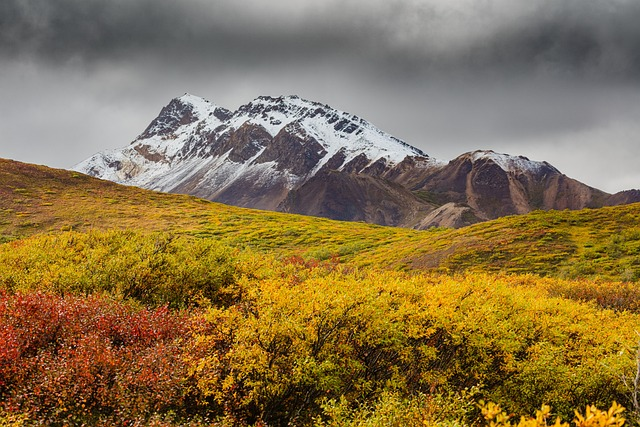
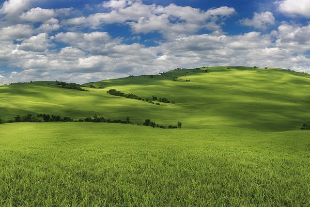
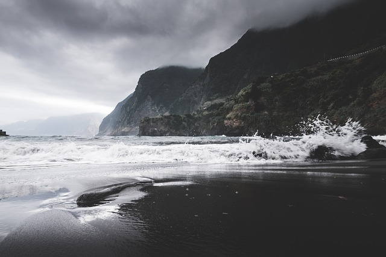
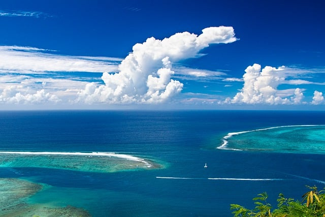
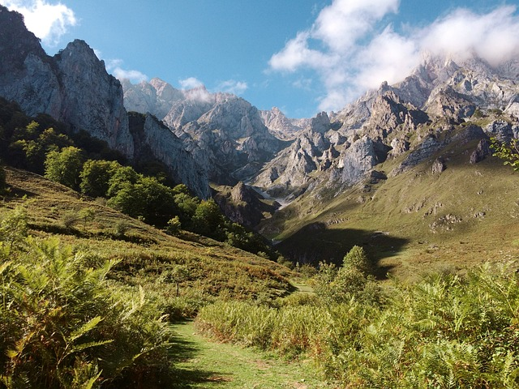

Located in North America, the country is bordered on the west by the Pacific Ocean and to the east by the Atlantic Ocean. Along the northern border is Canada and the southern border is Mexico. There are 50 states and the District of Columbia. Stretching from the northeastern states down to Florida, this region borders the Atlantic Ocean. It encompasses both low-lying, swampy areas in the south and more elevated regions to the north. Moving westward, you encounter the Appalachian Mountains, which extend from the Canadian province of Quebec to northern Alabama. These mountains were among the first regions settled by Europeans during the colonial period. Beyond the Appalachians lies the vast expanse of the Interior Lowlands, also known as the Great Plains. This region covers much of the central United States and extends into Canada. The Great Plains are characterized by prairies and fertile soil, making them a hub for agriculture. Further west, the landscape rises into the majestic Rocky Mountains. This region spans a significant portion of western North America and boasts some of the continent’s highest peaks, including Mount Elbert. To the west of the Rockies lie the Intermontane Plateaus, including the Columbia and Colorado Plateau. This area also contains the Great Basin, a largely arid region characterized by deserts and salt flats. Along the western edge of the continent lies the Pacific Coast Range. This includes the coastal mountains along the Pacific Ocean, extending from Alaska down to California.
    